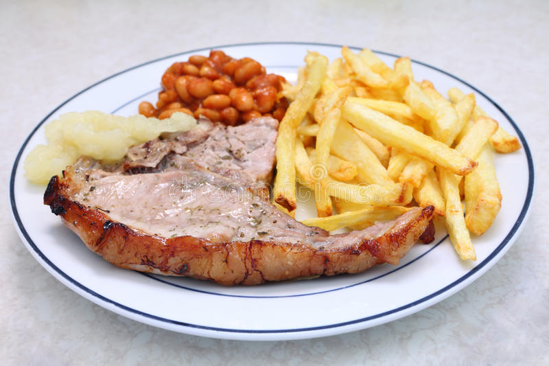

Chop and Chips

Pork chops are gifts from heaven, airfry them to get the most crunchy fat ;)
Ingredients
- Pork chop
- Bag of frozen fries
- Frozen peas
- Salt, pepper and spices
Steps
- Spice up pork chops with spices, salt and pepper
- Place pork chop in airfryer at medium temperature
- Put peas into a plastic container and microwave until cooked
- Once chops are done cooking, place in preheated oven at very very low heat
- Drop your desired amount of fries into the airfryer until cooked
- Plate up all of your items and feed the peasants